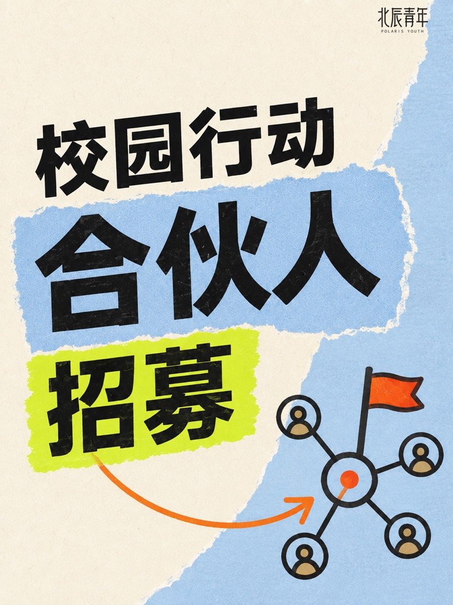
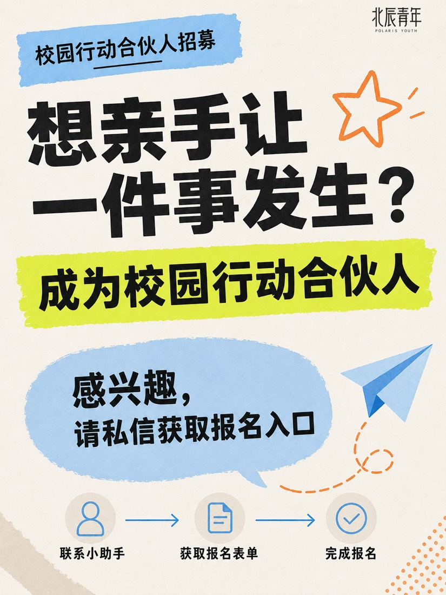
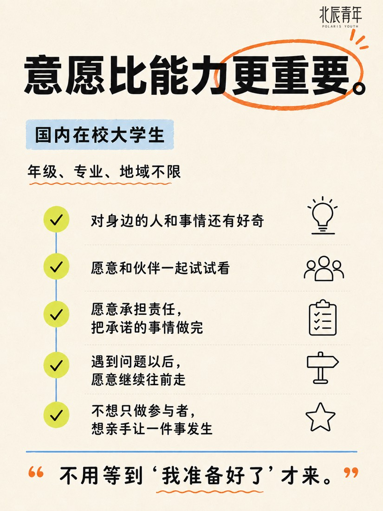
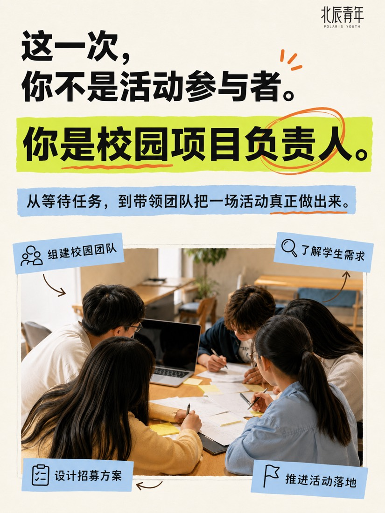
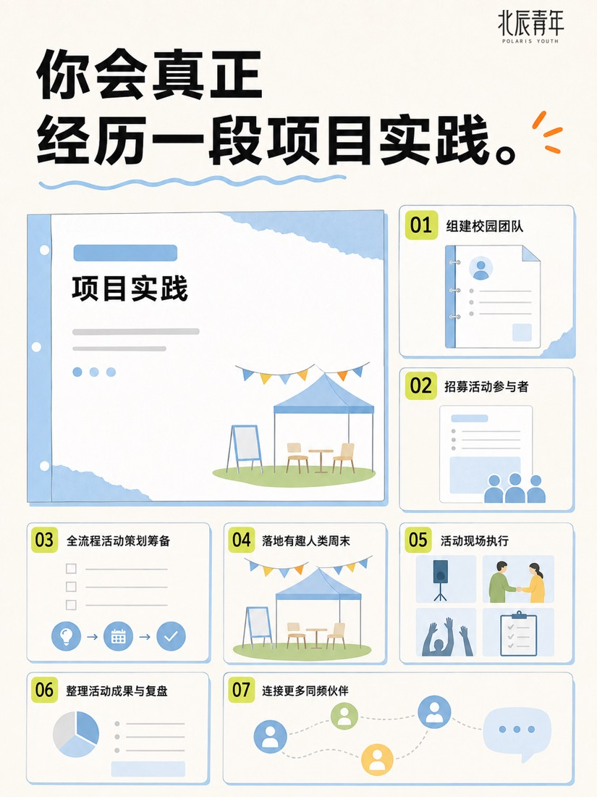
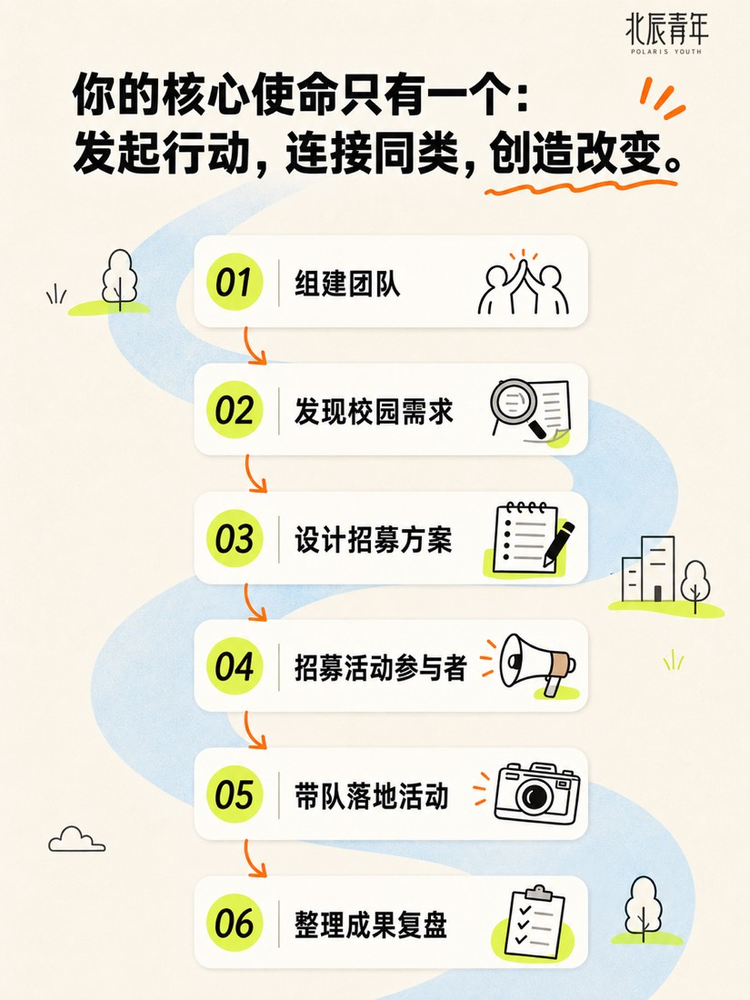
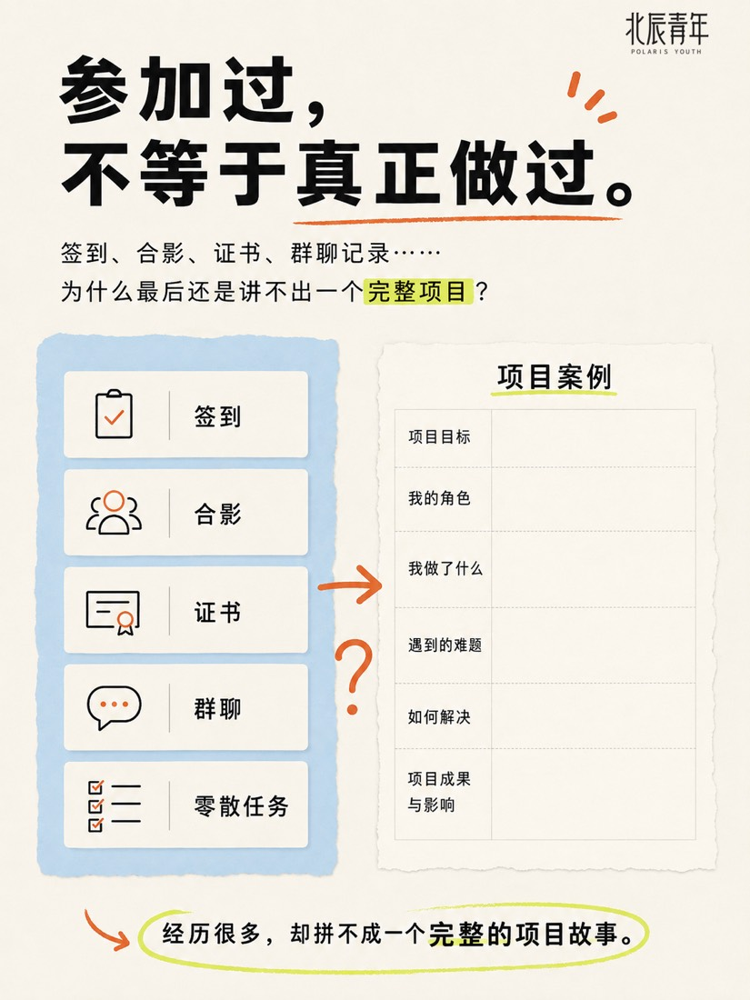
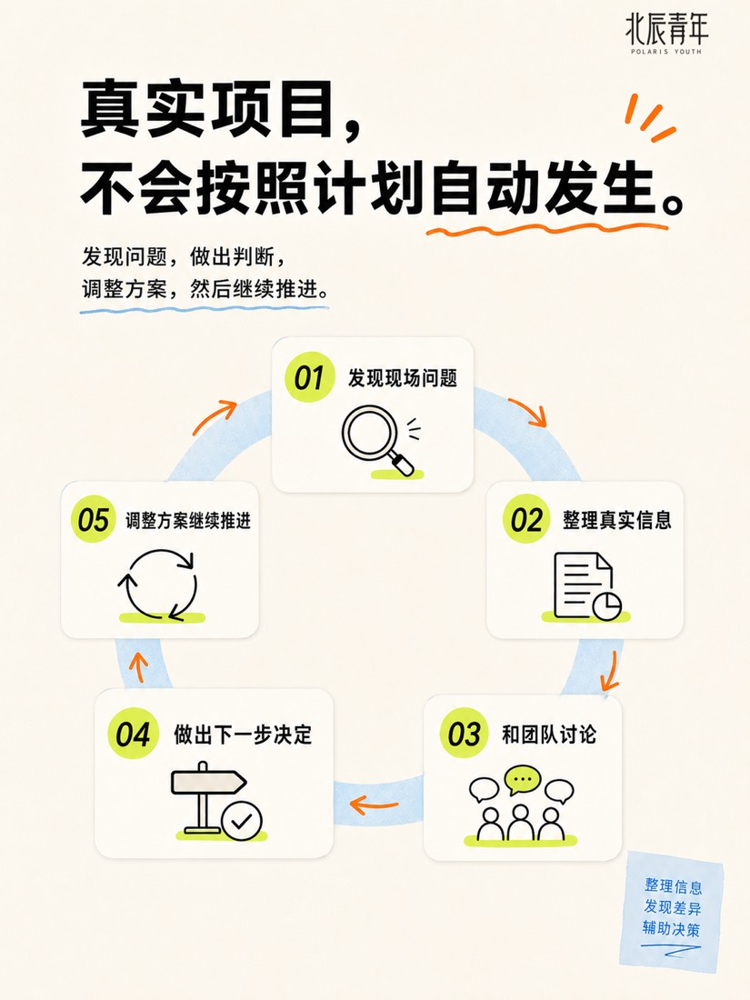

XINJIE ZHANG
XINJIE ZHANG 校园行动招募系列海报Campus Recruitment Poster Series 8 张8 posters
为北辰青年「校园行动合伙人」招募设计的一套 8 张小红书海报，覆盖注意吸引、学生痛点、角色解释、项目流程与成果、目标人群筛选和报名方式。 A set of eight Xiaohongshu posters for Polaris Youth’s “campus action partner” recruitment — covering attention, student pain points, the role, the project process and outcomes, audience fit, and how to sign up.
为什么做Why I made it
招募任务需要一整套风格统一、信息清楚的宣传物料，面向校园学生。 The recruitment task needed a full set of consistent, clearly written promotional materials aimed at students on campus.
我做了什么What I did
我根据会议纪要和调研结论设计 8 张海报的内容结构，参考北辰青年官方小红书风格；指挥 AI 生成视觉，并逐页核对文案、角色名称、职责表达、报名方式、Logo 位置、字号与留白。 From meeting notes and research findings I designed the content structure of all eight posters, referencing Polaris Youth’s official Xiaohongshu style. I directed AI to generate the visuals, then checked every page for copy, role names, how responsibilities were described, the sign-up method, logo placement, type size and spacing.
AI 帮了什么How AI helped
AI 根据我的结构和要求生成海报视觉草案。 AI generated the poster visuals from my structure and brief.
我负责的判断What I decided
初版里 AI 曾误解项目角色、用错名称、把合伙人职责缩窄成"招募"、生成不符合要求的二维码——我逐页对照资料修正，并决定最终采用哪一版。 In the first pass AI misread the role, used the wrong names, narrowed the partner role down to “recruitment,” and generated a non-compliant QR code. I corrected each page against the source material and decided which version to keep.







